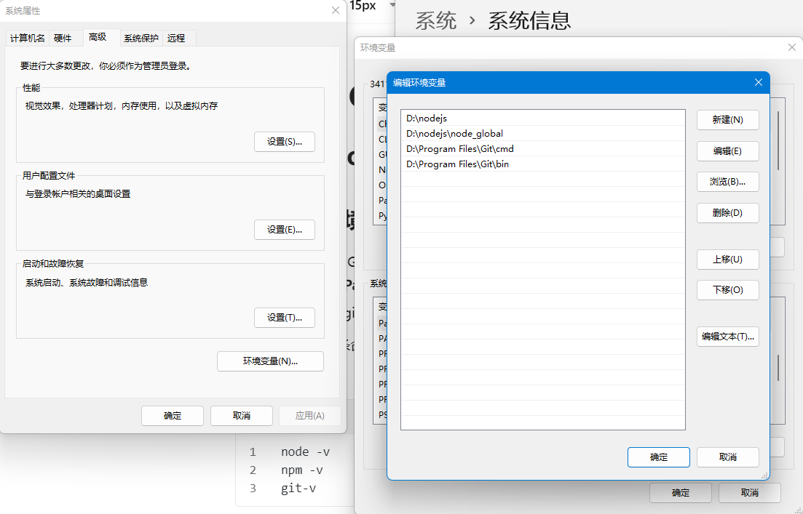
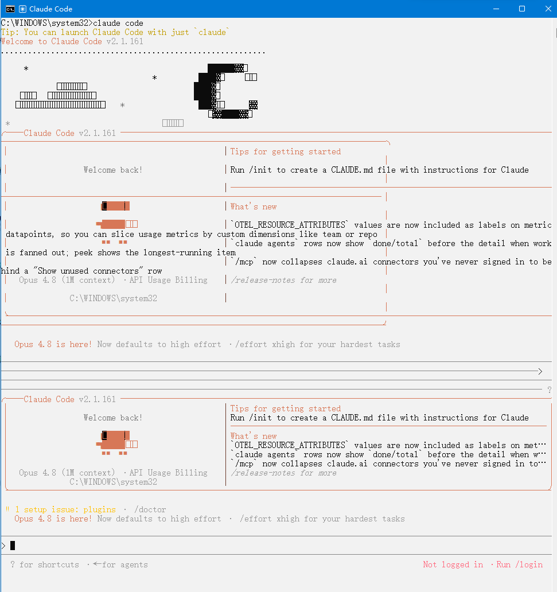
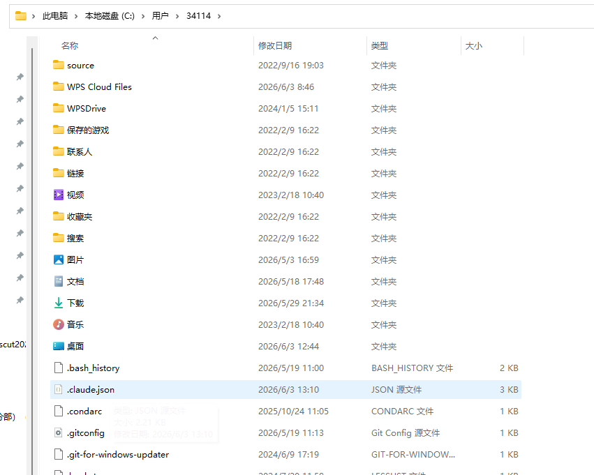
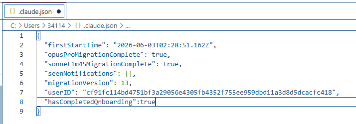
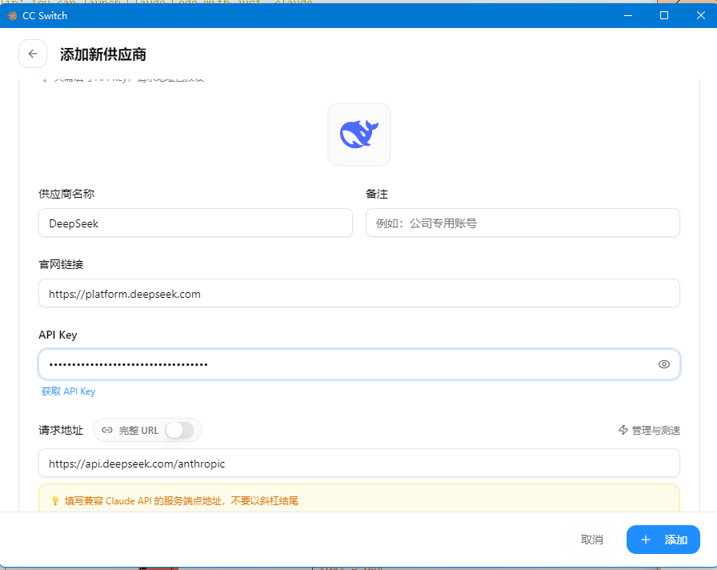
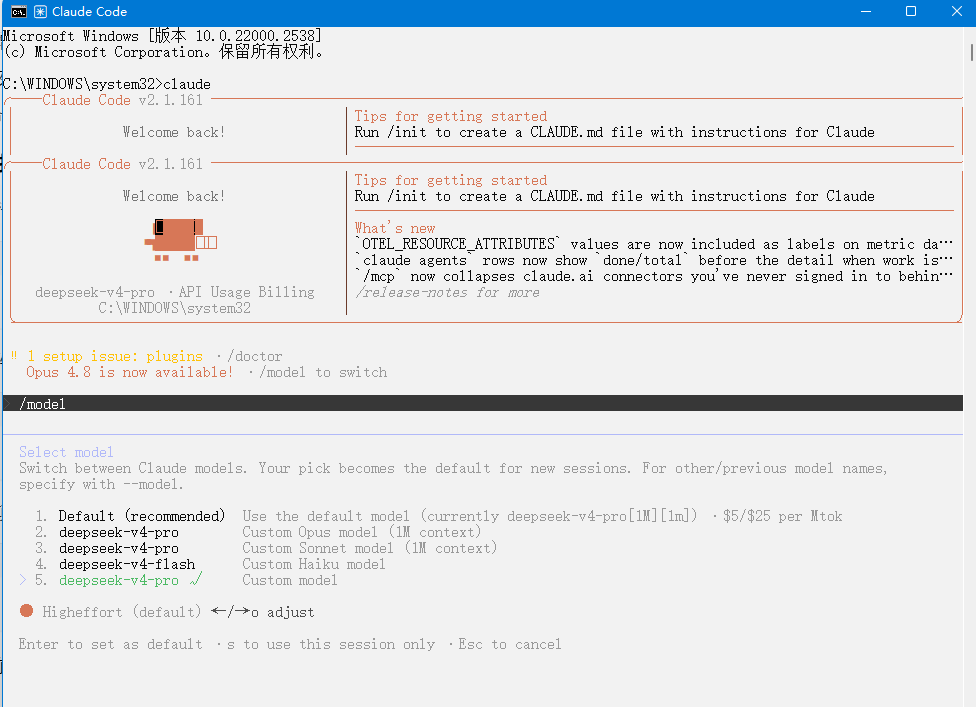
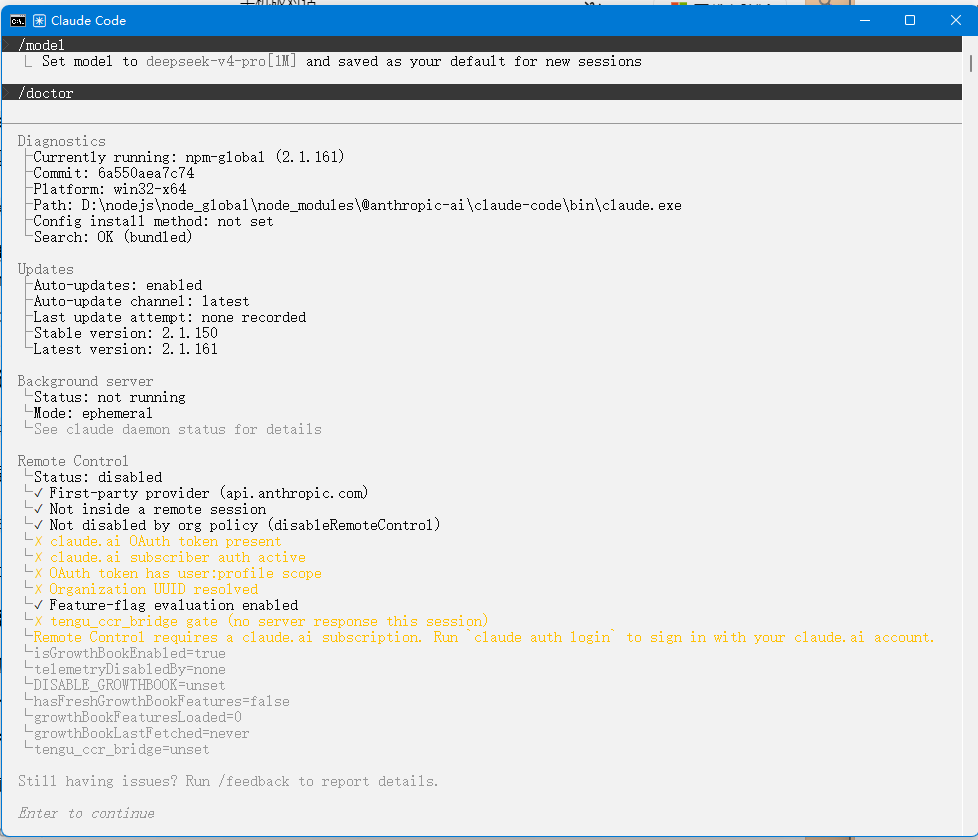
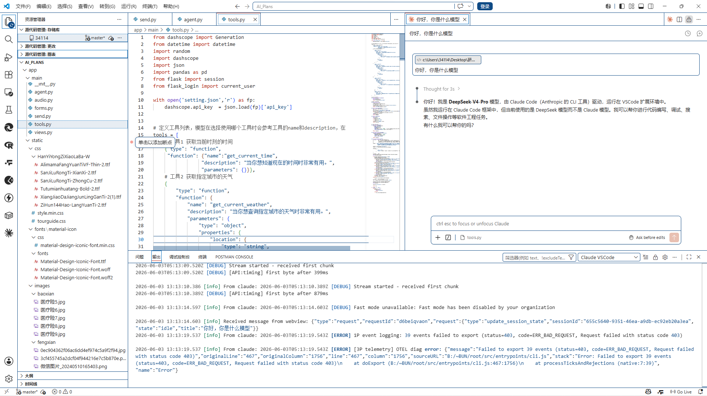

0-安装
一、安装 git for windows 和 Node.js
- 安装 git for windows 和 Node.js
- 我之前安装过 Git,node.js，且 都放在 D 盘，所以只需要找到路径，把这些路径添加进系统环境变量Path，实现全局调用
node/npm，如下图；

新开终端执行两条命令校验：
node -v
npm -v
git-v
正常输出版本号就代表环境变量配置成功，全局任意目录都能调用 node/npm/git。
二、安装Claude Code 和 cc_switch
- 全局npm安装客户端：CMD执行
npm install -g @anthropic-ai/claude-code，程序自动安装至D:\nodejs\node_global\node_modules\@anthropic-ai\claude-code；
npm install -g @anthropic-ai/claude-code
环境自动生效：因node_global已录入系统Path，任意终端直接输入claude即可启动程序。
- 在 github 下载 cc_switch ，选择 windows.msi 版
Releases · farion1231/cc-switch
三、获取大模型 apikey
在 api 平台获取 deepseekapi
参考 deepseek 接 Claude Code 的官方文档
接入 Claude Code | DeepSeek API Docs
1- 配置
一、打开 claude code

二、找到 json 文件，一般在用户那里，需要显示隐藏文件夹。

打开后编辑，在 userID 那行最后加上英文逗号，再加上"hasCompletedOnboarding": true
下图是更改后的。

三、打开 cc-switch
点击右上角加号，选择 deepseek，填写 api。可选模型，可勾选参数。

四、检查配置是否成功
步骤：
- 启动
claude后执行/model，在模型列表选定deepseek-v4-pro，设为全局默认模型（1M上下文）； - 执行
/doctor环境自检：- ✅ 安装路径、系统依赖、插件全部检测正常，修复初始弹窗
setup issue:plugins报错； - ⚠️ 仅
claude.ai官方账号未登录（Remote远程功能受限），不影响DeepSeek模型正常使用，无需强制登录。
- ✅ 安装路径、系统依赖、插件全部检测正常，修复初始弹窗
- 算力配置：默认
Higheffort高思考强度，适配复杂代码分析。
个人操作如下：
重新打开 claude code，输入‘/model’,看到新配置的 deepseek

一、当前界面状态
执行了 /model 进入模型切换面板，当前默认选中：deepseek-v4-pro（1M上下文窗口），底层是自定义兼容Opus规格的国产大模型。
可选模型清单说明
| 序号 | 模型名称 | 配置说明 | 适用场景 |
|---|---|---|---|
| 1 | Default(recommended) | 默认：deepseek-v4-pro(1M上下文)，计费：$ 5/ $25 每百万token |
通用代码、复杂项目解析（推荐常驻默认） |
| 2 | deepseek-v4-pro | 对标Opus规格、1M上下文 | 大型工程重构、多文件项目分析、复杂算法 |
| 3 | deepseek-v4-pro | 对标Sonnet规格、1M上下文 | 日常编码、调试、需求开发，性价比均衡 |
| 4 | deepseek-v4-flash | 对标Haiku轻量化模型 | 小代码片段、快速问答、轻量化脚本，速度最快、费用更低 |
| 5 | Custom model | 自定义接入模型 | 自行填入第三方API地址接入私有模型 |
二、操作按键说明（底部提示）
← / →：上下切换光标选中不同模型Enter：设为全局默认，之后新开会话自动使用该模型s：仅当前会话生效，本次对话用这个模型，下次启动恢复原有默认Esc：取消选型，退出模型菜单
下方 Higheffort(default)
- 代表思考强度默认高负载，同样可用左右键切换：Loweffort/Medeffort/Higheffort；
- High：深度思考，复杂代码推理更强，消耗token更多
- Low：快速响应，节省用量、回复更快
三、配套遗留提示处理
1 setup issue: plugins · /doctor
仍存在插件配置异常，退出model面板后输入
/doctor自动检测修复插件问题
Opus4.8 available
原生Opus模型需要登录Claude账号才可用，你当前用的是DeepSeek自定义兼容模型
四、选型建议
- 做项目源码分析、算法攻坚：选2号
deepseek-v4-pro+ Higheffort - 日常写代码、查bug：选3号Sonnet规格，均衡速度与效果
- 小代码片段、快速提问：选4号flash轻量化模型
五、按 ESC 退出/model， 输入/doctor 可诊断

绝大部分环境正常，仅缺少Claude官网账号登录（非必用，不影响DeepSeek模型正常使用）
- 安装信息（全部正常）
安装路径：D:\nodejs\node_global\node_modules\@anthropic-ai\claude-code\bin\claude.exe（通过npm全局安装，和你之前配置的node全局目录匹配）
系统：win32-x64、版本2.1.161为最新版，自动更新已开启
之前弹窗
1 setup issue:plugins已修复完毕，无插件报错
- 异常项说明（黄色警告）
Remote Control requires a claude.ai subscription. Run `claude auth login` to sign in with your claude.ai account.
问题：未登录Claude官方账号，Remote远程控制、原生Opus模型功能被禁用
影响：不影响你当前DeepSeek-v4-pro模型使用，日常写代码、调试完全不受限制；仅想要调用Anthropic原生Claude系列模型才需要登录。
- 后台服务
Background server: not running：临时后台服务未启动，按需自动拉起，无需手动处理。
继续使用DeepSeek（推荐，不用登录）直接回车退出诊断面板，正常发指令写代码即可。
2-VScode 使用
方案1：终端直接调用
- 打开VSCode → `Ctrl+`` 调出内置终端
- 终端直接输入
claude
直接唤起和CMD一模一样的Claude Code交互界面，可读取当前打开项目文件。
终端会自动读取当前工作区目录，
/init生成的CLAUDE.md直接保存在项目根目录。
方案2：安装VSCode插件（侧边栏快捷调用，推荐）
1. 安装插件
- VSCode左侧扩展商店，搜索 **Claude Code **
2. 配置对接本地claude客户端
在插件配置关联本地claude.exe路径，实现代码选中右键提问、侧边栏对话。
- 插件设置 → 选择Local CLI模式，填入本地
claude.exe路径：
D:\nodejs\node_global\node_modules\@anthropic-ai\claude-code\bin\claude.exe
- 保存配置，侧边栏出现Claude图标，点击即可对话，支持：
- 选中代码右键提问/重构/注释
- 直接读取全项目代码上下文
- 代码片段一键替换修改
3.提问检验配置是否成功

一个 403 报错
[ERROR] 1P event logging: 50 events failed to export (status=403)
OTEL error: Failed to export 50 events
**Claude 插件想把「使用统计数据」上传给官方服务器，用来做产品优化。 但官方服务器说：你没有权限上传 → 返回 403。**它只是插件的统计数据上传失败，功能 100% 正常。
解决方案：环境变量永久关闭
- 关闭 VS Code 全部窗口
- Windows 新增系统环境变量：
操作步骤： 此电脑→右键属性→高级系统设置→环境变量→用户变量新建
- 变量名：
CLAUDE_CODE_ENABLE_TELEMETRY - 变量值：
false保存，重启 VS Code 即可。
原理：关闭插件遥测埋点上报，不再往 Anthropic 服务器发日志，403 直接消失。